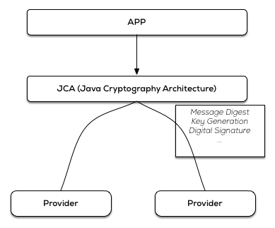
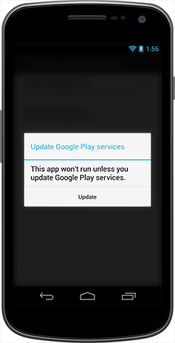
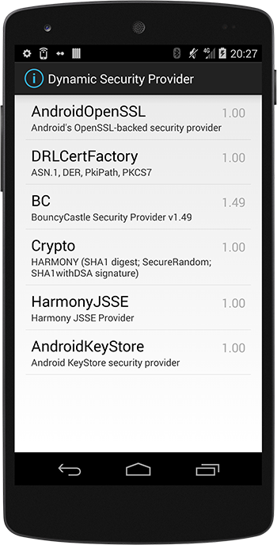
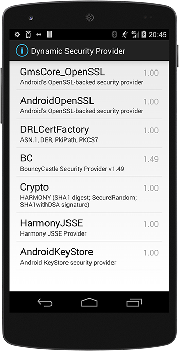
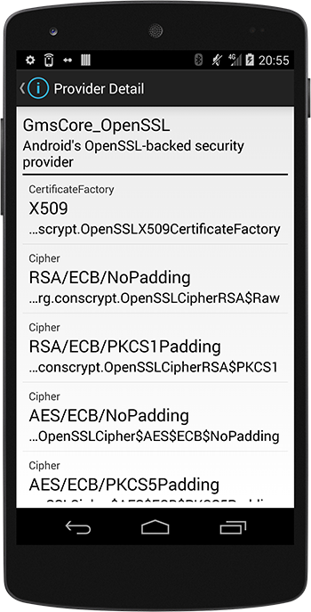

A quick look into the Google Play Services Dynamic Security Provider
Recently, Google Play Services 5.0 was released 1, and among the big list of API changes and new features we also found a Dynamic Security Provider.
The intention here is that apps can now use this API to install a dynamic security provider, which then acts as a replacement for the platform's bundled secure networking APIs. The benefit is that this Play Services Security Provider can be updated frequently by Google, which should lead to a rapid delivery of security patches.
But before taking a look into this Google Play Services Dynamic Security Provider and how it can be used in your own applications, let's take a step back and refresh the security provider model used on Android, and how this Dynamic Security Provider relates to the one bundled with the platform.
Android Security Provider
Android builds on the Java Cryptography Architecture (JCA) 2, which, very bluntly summarized, is a set of interfaces to common cryptographic primitives/algorithms.
Since JCA has been architected in a way to provide implementation independence and extensibility, implementation happens through a provider-based archtecture. A Cryptographic Service Provider (CSP) 3 implements one or more of the cryptographic services (like digital signature algorithms, key generation algorithms, ...). The provider registers the algorithms it implements, so that there is a JCA registry of providers with their supported algorithms.
An application will then use the JCA API to specify the wanted algorithm, and depending on its registry, JCA will give it an implementation from one of the loaded providers. 
JCA allows for static and dynamic registration of a security provider, and as such it's possible to add a security provider at run-time (for use in your own application only) with the Security.addProvider() and Security.insertProviderAt() methods.
As an example, this is how you could for instance add the Spongy Castle (repackage of Bouncy Castle) Security Provider, and ensure it is used in preference to other security providers:
static {
Security.insertProviderAt(
new org.spongycastle.jce.provider.BouncyCastleProvider(), 1);
}A more elaborate JCA overview would lead us too far for this post, but a thorough examination of the Android Cryptographic Providers can be found in the Android Security Internals book by Nikolay Elenkov (No Starch Press).
Use the Google Play Services Dynamic Security Provider
Now on to using this Google Play Services Dynamic Security Provider in our own applications.
First of all, Google Play Services needs to be setup for your project if that is not yet the case. The necessary setup information can be found in the documentation, and basically boils down to adding the Google Play Services API as a dependency.
apply plugin: 'android'
...
dependencies {
compile 'com.google.android.gms:play-services:6.1.+'
}Internally Google referes to Google Play Services as Google Mobile Services (GMS), so that's where the GMS moniker is coming from...
The gateway to this new security provider is through the com.google.android.gms.security package and the com.google.android.gms.security.ProviderInstaller class therein.
Install the dynamic security provider
This ProviderInstaller utility class can be used to install a replacement for the platform default provider in a synchronous and an asynchronous way, depending on what you need.
Here we see how we could for instance load the dynamic security provider in the onCreate() method of an Activity:
@Override
protected void onCreate(Bundle savedInstanceState) {
super.onCreate(savedInstanceState);
ProviderInstaller.installIfNeededAsync(this, providerInstallListener);
}
private ProviderInstaller.ProviderInstallListener providerInstallListener = new ProviderInstaller.ProviderInstallListener() {
@Override
public void onProviderInstalled() {
// Provider installed
}
@Override
public void onProviderInstallFailed(int errorCode, Intent recoveryIntent) {
// Provider installation failed
}
};Handle installation failure
The install() methods might be a bit misleading, because they might give the impression that the new Provider is being downloaded and then installed or something, but that is not the case. This Provider is part of the Google Play Services package, and failure to 'install' this Provider will thus mostly be related to a failure with Google Play Services, namely the unavailability of the library, or the presence of a too old version.
Google Play Services updates are delivered through the Google Play Store app. But updates might not reach all users immediately, or the user might have a device without the Google Play Store, and as such it might be worthwile to check for a compatible Google Play Services version when your application first launches, since the presence of the security provider is important for the good working of your application.
The Google Play Services library includes utility methods to determine whether or not the Google Play Services version on the device supports the version of the client library that your application wants to use. With these utility methods it's also possible, when you detect that the version on the device is too old, to take the user to the Google Play Store in order to install the recent version of the Google Play Services.
The user then gets a Dialog which opens the Google Play Store for an update of the Google Play Services library 
For people accustomed to working with the Google Play Services library, failure to install the Dynamic Security Provider is handled as elsewhere in the library.
You can verify the Google Play Services version with a call to the isGooglePlayServicesAvailable. If the result code is SUCCESS, then the Google Play Services APK is up-to-date and can be used.
For usage in the onProviderInstallFailed callback, either you can use the returned errorCode with a standard resolving UI provided by GooglePlayServicesUtil, or you can use the returned recoveryIntent to implement your own custom UI.
Verify 'GmsCore_OpenSSL' usage
Now, let's take a look into an application, and verify that this Google Play Services Dynamic Security Provider is actually in use.
For that purpose I've made a small Android application that lists the Security Providers. Basically just a simple UI above the Security.getProviders() method.
/**
* Returns an array containing all the installed providers. The order of the providers in the array is their preference order.
*/
public static Provider[] getProviders()When we run this application on a Nexus 5 with Android 4.4.4, we see the following Security Providers loaded:

When we add the code to load the Google Play Services Dynamic Security Provider, and run the same test, we see: 
The Security.getProviders() method returns the providers in their preference order, and as such we can verify that:
- the Google Play Services Dynamic Security Provider is now loaded (with the GmsCore_OpenSSL name)
- and has been loaded as the first one to use, in preference of the other providers
All in all, it's very simple to start using the new Google Play Services Dynamic Security Provider!
Technical look into Conscrypt
Now that we have established how this Provider can be used in our applications, it might also be interesting to look behind the scenes.
Since Android 4.0 we can find the AndroidOpenSSL provider included.
Google started working on an OpenSSL-backed security provider, where the native OpenSSL code is called from Java classes through JNI, with the goal to improve the performance of the cryptographic routines. The stand-alone version of this provider is called Conscrypt, and can be found at https://android.googlesource.com/platform/external/conscrypt/
A disadvantage of the Android security providers setup is of course that these providers are bundled with the platform, and since not every Android user has a device that is updated to the latest Android release in a timely fashion, your applications are not always running on a device where for instance the latest standards are available. For this reason the usage of a custom Provider was already quite prevalent, and can be seen demonstrated in the aforementioned Bouncy Castle / Spongy Castle example.
But this could of course be well simplified if we could rely on an always-up-to-date Security Provider, that is updated outside of the platform itself.
A version of Conscrypt is now included with Google Play Services, where the native library is bundled in the GMS app-lib directory, so that applications that use this new Provider can automatically get the newest version when GMS is upgraded.
What remains now is to take a look into the algorithms that are available in this Provider, and that can easily be done with a call to the Provider.getServices() method.
We can add a screen to our test application, and check the Services that are available in this new Provider:

The following engine classes and algorithms are supported by this Google Play Services Dynamic Security Provider:
| Engine Class | Algorithm |
|---|---|
| CertificateFactory | X509 |
| ____________________ | ____________________ |
| Cipher | ARC4 AES/CBC/NoPadding AES/CBC/PKCS5Padding AES/CFB/NoPadding AES/CTR/NoPadding AES/ECB/NoPadding AES/ECB/PKCS5Padding AES/OFB/NoPadding DESEDE/ECB/NoPadding DESEDE/ECB/PKCS5Padding DESEDE/CBC/NoPadding DESEDE/CBC/PKCS5Padding DESEDE/CFB/NoPadding DESEDE/OFB/NoPadding RSA/ECB/NoPadding RSA/ECB/PKCS1Padding |
| ____________________ | ____________________ |
| KeyAgreement | ECDH |
| ____________________ | ____________________ |
| KeyFactory | DH DSA EC RSA |
| ____________________ | ____________________ |
| KeyPairGenerator | DH DSA EC RSA |
| ____________________ | ____________________ |
| Mac | HmacMD5 HmacSHA1 HmacSHA224 HmacSHA256 HmacSHA384 HmacSHA512 |
| ____________________ | ____________________ |
| MessageDigest | MD5 SHA-1 SHA-224 SHA-256 SHA-384 SHA-512 |
| ____________________ | ____________________ |
| SecureRandom | SHA1PRNG |
| ____________________ | ____________________ |
| Signature | ECDSA MD5WithRSA NONEwithRSA SHA1WithRSA SHA224WithRSA SHA256WithRSA SHA384WithRSA SHA512WithRSA SHA1withDSA SHA224withECDSA SHA256withECDSA SHA384withECDSA SHA512withECDSA |
[GmsCore_OpenSSL Provider detail]
Summary
Android relies on the Java Cryptography Architecture, and as such has several Security Providers installed. Since Security Providers that are bundled with a platform version are not always ideal, it's handy that we can now depend on the Google Play Services Dynamic Security Provider. The usage of this new Provider is quite simple, and totally familiar for everyone who already used the Google Play Services library. The available algorithms should make it a viable option for many application developers.
For the sake of completeness, I've uploaded the code of this test application to a github repo, but this is really not much more than a default Master/Detail application above the Security class methods.
References
This content is licensed under Creative Commons Attribution 4.0
Google Play Services 5.0 announcement: http://android-developers.blogspot.de/2014/07/google-play-services-5.html ↩
Java Cryptography Architecture (JCA) Reference guide: http://docs.oracle.com/javase/8/docs/technotes/guides/security/crypto/CryptoSpec.html ↩
Cryptographic service providers: http://docs.oracle.com/javase/8/docs/technotes/guides/security/crypto/CryptoSpec.html#ProviderArch ↩